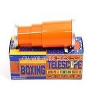
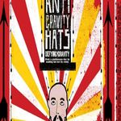
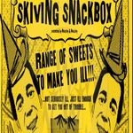
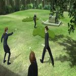
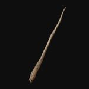

Ishan Ganguly, coder
My favorite character
Fred Weasley
My favorite character is a fictional character which is well known to many Harry Potter fans, Fred Weasley. He is one of the 9 Weasleys, and one of the 7 Weasley cousins. The Weasley family is one of the largest families in the wizarding world, and it is fascinating, isn't it? Fred Weasley has a twin, George Weasley, and both of them are so much similar! They do everything similarly and even talk in chorus, that is to say, together. One who has seen these 2 Weasley brothers has never seen anyone similar to them. They were born on 1st April, and of course, judging by their date of birth, you can say they are related to pranks. In reality, Fred and George are the biggest pranksters in the Hogwarts school of Witchcraft and Wizardry, and they just love pranking and inventing pranking things together. They are the owners of the Weasley's Wizarding Wheezes, a joke shop, just as popular as Zonko's, another joke shop in Hogsmeade. They played beaters (a position in the game of Quidditch, a famous wizarding game) for the Gryffindor Quidditch league. And talking about Gryffindor, did I mention the four houses of Hogwarts school? A house is like a family for as long the students stay in the school, and they will compete against other houses to win the house cup at the end of the year. Being good will earn you house points, whereas rule-breaking will reduce them. The four houses are- Gryffindor, Hufflepuff, Ravenclaw and Slytherin. All the Weasleys have been in Gryffindor, 2 of the Weasleys have become Gryffindor prefects(house captains), and these twins have always shown patriotism to Gryffindor, of which the founder of Gryffindor would've been so proud. So if you are in Hogwarts and watching a quidditch game, you will always hear Fred and George screaming, "GRYFFINDOR, GRYFFINDOR" from the stands, no matter where you are. These properties of these twins have always inspired me and Fred has been my favorite all the way.

My favorite pranking objects
Fred and George have invented many pranking devices. Here are some of the best!
 

 